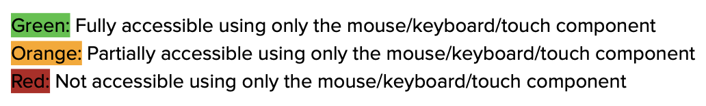

On this page, we will take a look into how user interaction and input can change the accessibility features of a
search bar. We will be looking at users limited to using only a mouse, only a keyboard, and only touch to use
the features of the search bar on three different applications. Look at the image below for reference of what each
applications search bar looks like.
I looked at search bars from Google, CNN, and CAB to analyze their accessibility when using only a mouse, only a keyboard, and only touch screen.
Click each button to learn more about my experience with each!

When a user clicks on the search bar, a list of recommended searches appear based on
worldwide trending searches. If a user wishes to input their own prompt, they must use the keyboard to type in their
response. If a user begins typing a search, more recommended searches pop up in a drop down menu that the user can
use their mouse or trackpad to click on. Note: the search bar is only accessible to input a specific
search from the user if they have access to a keyboard.
By only accessing the keyboard to use Googles Search Bar, one can fully carry
out the task they are trying to achieve. Loading into the google homepage, the search bar is already activated
awaiting user input. The line that indicates this is flashing on and off in the same place to let users know that
it is awaiting input. From there, a user can use the keyboard to type in their search and then press enter to
initiate the search. While typing, a user can also use the down or up arrows to select a suggested search based
on the text they have already begun to input. Note: A user needs only a keyboard (no mouse/trackpad, or touch)
in order to use Googles search bar.
On a mobile device, Googles home page does not have the search bar automatically
activated. In this case, the user must click an existing recommended search based on world wide trending searches
from a displayed list or they must click into the search bar itself. Once they click into the search bar, it is
activated and awaiting their input. They must then use the touch keyboard to type in their search. Note: A user
can use all functional aspects of the search bar using touch features such as clicking into the search bar and
using the touch keyboard to type their search.
When a user lands on CNNs search page, there is a displayed search bar that is
not currently selected. A user then must use their mouse or trackpad to click into the search bar. From here,
they must use their keyboard to type in a search. They can then use their mouse to click on the search icon in
the far right hand side of the search bar to submit their search. It is a bit inconvenient to use the mouse to
initiate the search as the user must travel their mouse or trackpad across the entire page to reach the search
icon. Note: the search bar is not functionally accessible without a keyboard.
By only accessing the keyboard to use CNNs Search Bar, one can fully carry out
the task they are trying to achieve. To activate the search bar so that it is awaiting user input, the user must
hit the tab bar on their keyboard twice, which is not at all intuitive or learnable. Once there, the line that
indicates search bar activation is flashing on and off in the same place to let users know that it is awaiting
input. From there, a user can use the keyboard to type in their search and then press enter to initiate the
search. Note: A user needs only a keyboard (no mouse/trackpad, or touch) in order to use CNNs search bar.
On a mobile device, CNNs search bar is not automatically activated. Therefore,
a user must first click into the search bar box and then use their touch keyboard to type in their search. They
can then choose to either press search/enter on their touch keyboard or they can press the search icon on the
right side of the search bar. Both submission options are easily accessible. Note: A user can use all functional
aspects of the search bar using touch features such as clicking into the search bar and using the touch
keyboard to type their search.
On the CAB homepage, the search bar is automatically activated. A user must
then use their keyboard to type in a search prompt. From there, if a user wishes to submit their search,
they must move their mouse away from the search bar a couple inches to a button that says find courses. This may
not be very intuitive for everyone. Note: the search bar is not functionally accessible without a keyboard.
By only accessing the keyboard to use CABs Search Bar, one can fully carry out
the task they are trying to achieve. Upon entering the CAB homepage, a user must simply type in their search
prompt on their keyboard, then press enter to submit their search. It is very straightforward and intuitive.
Note: A user needs only a keyboard (no mouse/trackpad, or touch) in order to use CABs search bar.
On a mobile device, CABs search bar is automatically activated. Therefore, a
user can immediately type their search prompt using the touch keyboard function and then they can either hit
enter on that keyboard, or they must scroll down and click the button that says find courses. Note: A user can
use all functional aspects of the search bar using touch features such as clicking into the search bar and
using the touch keyboard to type their search.
As you can see above, most search bars can not be used without a keyboard, as it is required for the user to type in their
prompt. Google however, allows users to select a search prompt from a list of trending searches giving it some
functionality without a keyboard. It is very helpful for users when the search bar loads and is already activated and
awaiting user input. Although it is intuitive for users to click into the search bar with a mouse, it is far less intuitive,
learnable, and memorable for them to have to hit the tab bar twice if they only have access to a keyboard. Lastly, having
the ability to either press enter or click a search button to initiate a users search, is beneficial. This makes sure a
user has multiple accessible ways to submit their search.